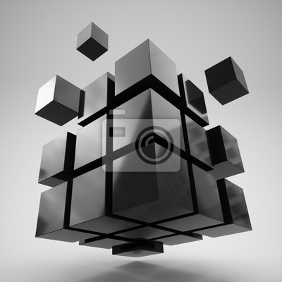
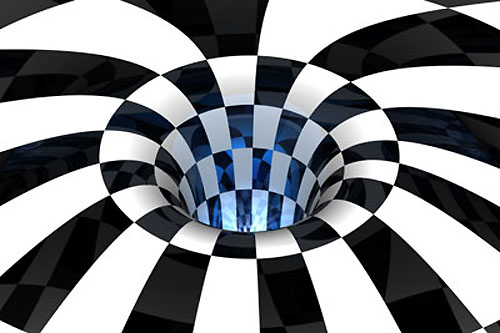

Grafika 3D to technika tworzenia obrazów i animacji w przestrzeni trójwymiarowej, gdzie obiekty mają długość, szerokość i głębokość. Grafika 3D jest używana w filmach, grach komputerowych, symulacjach, projektowaniu produktów czy architekturze.
Grafika Trójwymiarowa

üß© Cechy grafiki 3D:
1.Możliwość animacji i symulacji fizyki Obiekty mogą poruszać się, zginać, zderzać – jak w prawdziwym świecie.
2.Obsługa oświetlenia, materiałów i tekstur Pozwala symulować różne powierzchnie (metal, szkło, drewno) oraz światła i cienie.


✅ Zalety grafiki 3D:
1. Realistyczne odwzorowanie przestrzeni Możliwość tworzenia obiektów, które wyglądają bardzo naturalnie, z głębią, światłem i cieniem.
2.Możliwość animacji i interakcji Obiekty 3D można animować, obracać, wchodzić z nimi w interakcje (gry, filmy, VR).
❌ Wady grafiki 3D:
1.Wysokie wymagania sprzętowe Tworzenie i renderowanie grafiki 3D wymaga mocnych komputerów i kart graficznych.
2.Czasochłonność Modelowanie, teksturowanie, oświetlenie i animacja mogą zająć dużo czasu.
üé® Programy do grafiki 3D:
1.Blender Darmowy, open-source, bardzo rozbudowany program do modelowania, animacji, renderowania.
2.SketchUp Prostszym narzędzie do modelowania architektonicznego.